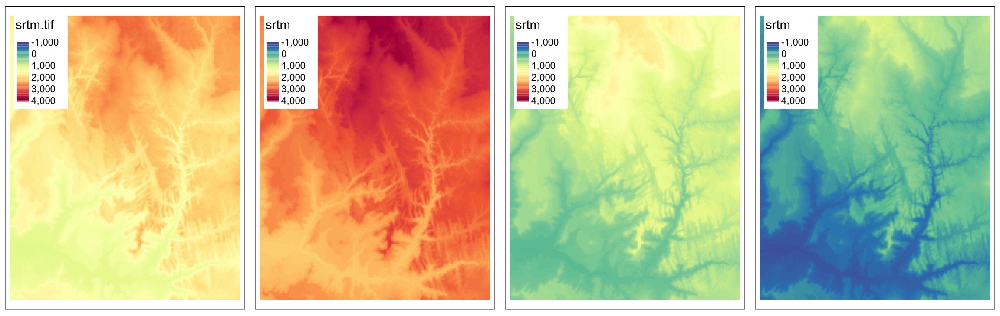
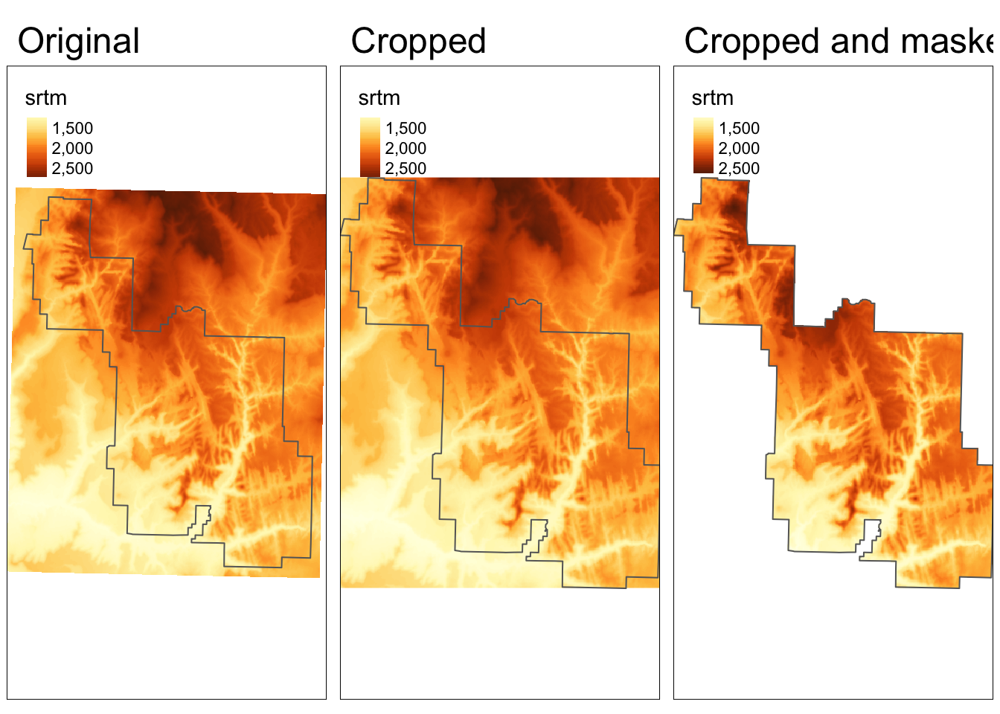
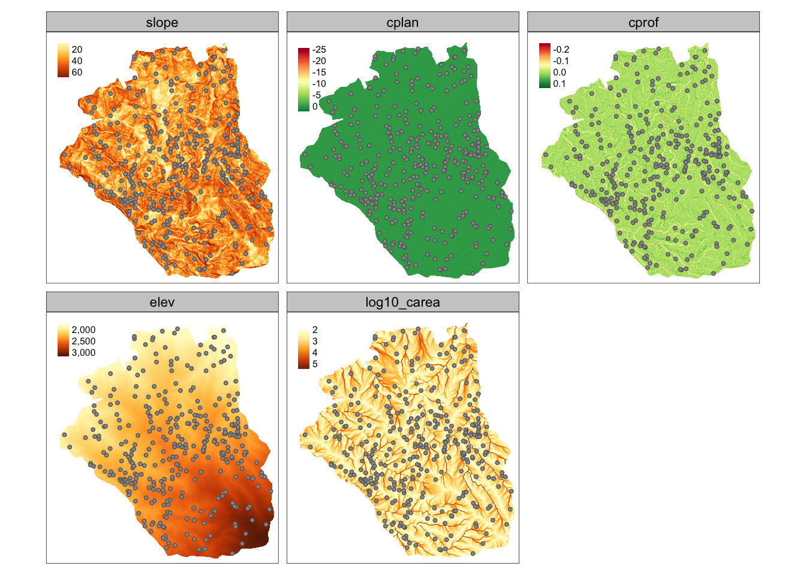
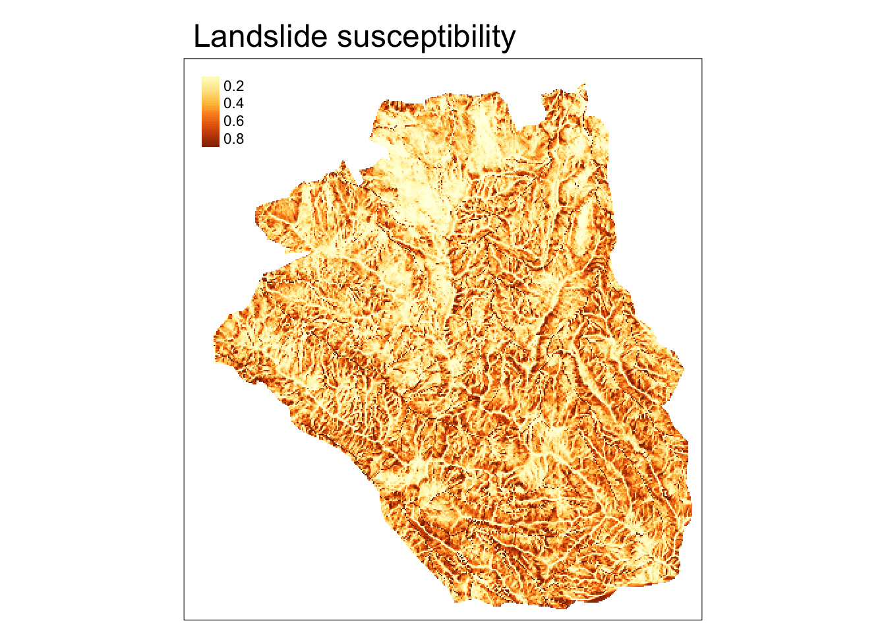
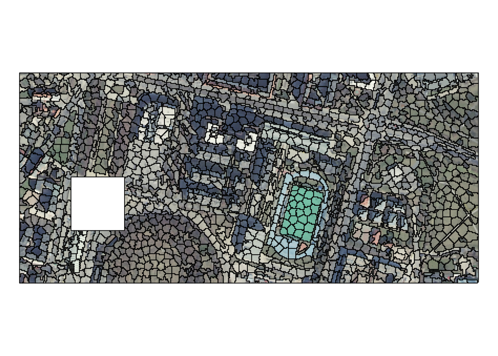

Chapter 5 Manipulating raster data
This chapter requires the following packages:
5.1 Example data
We will read a few datasets for this chapter.
It includes srtm.tif – an elevation raster data the Zion National Park area:
We can quickly look at this dataset’s summary by just typing its name:
## class : SpatRaster
## dimensions : 457, 465, 1 (nrow, ncol, nlyr)
## resolution : 0.0008333333, 0.0008333333 (x, y)
## extent : -113.2396, -112.8521, 37.13208, 37.51292 (xmin, xmax, ymin, ymax)
## coord. ref. : lon/lat WGS 84 (EPSG:4326)
## source : srtm.tif
## name : srtm
## min value : 1024
## max value : 2892We can also extract each information separately using the following functions:
ncol(srtm)
nrow(srtm)
nlyr(srtm)
res(srtm)
ext(srtm)
## [1] 465
## [1] 457
## [1] 1
## [1] 0.0008333333 0.0008333333
## SpatExtent : -113.239583212784, -112.85208321281, 37.1320834298579, 37.5129167631658 (xmin, xmax, ymin, ymax)Next, we can quickly look at the data with the plot() function…

… or create more customized map with the {tmap} package:
tm_shape(srtm) +
tm_graticules() +
tm_raster(style = "cont",
title = "elevation (m a.s.l)",
palette = "-Spectral") +
tm_scale_bar(breaks = c(0, 2, 4),
text.size = 1) +
tm_credits("N. Roelandt and J. Nowosad") +
tm_layout(inner.margins = 0,
main.title = "Zion National Park")
Additional raster dataset we use in this chapter is nlcd.tif – a simplified version of the National Land Cover Database 2011 product for the Zion National Park area.
5.2 Map algebra
Map algebra is used for a various task related to spatial raster data processing and analysis.
It can be divided into four groups of operations:
- Local - per-cell operations
- Focal - most often the output cell value is the result of a 3 x 3 input cell block
- Zonal - to summarize raster values for some zones (usually irregular areas)
- Global - to summarize raster values for one or several rasters
5.2.1 Local operations
Numerical computations are basic examples of local operations – we can create new raster objects by, for example, adding or subtracting existing values:

Another example of local operation is when we want to replace some values.
This can be done by either subst() or classify().
The subst() function is useful when we want to quickly replace some value(s).

On the other hand, the classify() function is more useful when we want to replace many values.
It requires at least two arguments – our input raster and a reclassification table.
Reclassification table is a matrix usually with two columns (old/new) or three columns (from/to/new):
## [,1] [,2] [,3]
## [1,] 0 1500 1
## [2,] 1500 2000 2
## [3,] 2000 9999 3
The last example of local operation is useful when we have many raster layers and want to calculate, for example, spectral indices, such as NDVI. In this case, each cell’s values are treated independently.
To showcase local operations on many layers, we will use the landsat.tif dataset.
It contains four bands (2, 3, 4, 5) of the Landsat 8 image for the area of Zion National Park.
landsat_path <- system.file("raster/landsat.tif", package = "spDataLarge")
landsat <- rast(landsat_path)
landsat## class : SpatRaster
## dimensions : 1428, 1128, 4 (nrow, ncol, nlyr)
## resolution : 30, 30 (x, y)
## extent : 301905, 335745, 4111245, 4154085 (xmin, xmax, ymin, ymax)
## coord. ref. : WGS 84 / UTM zone 12N (EPSG:32612)
## source : landsat.tif
## names : landsat_1, landsat_2, landsat_3, landsat_4
## min values : 7550, 6404, 5678, 5252
## max values : 19071, 22051, 25780, 31961
Normalized Difference Vegetation Index (NDVI) is one of the most commonly used spectral index. It uses values of two bands: red (3) and near-infrared (4):
\[ \begin{split} NDVI&= \frac{\text{NIR} - \text{Red}}{\text{NIR} + \text{Red}}\\ \end{split} \]
The above equation can be rewritten as an R function that accepts two arguments, and returns a result of the calculations.
Now, we can apply our ndvi_fun() to the lapp() function.
The only important thing we need to remember is to subset our raster to contain only the needed layers:
5.2.2 Focal operations
Focal operations, also known as moving window operations, apply a function for a given window around each cell. A numeric vector or a matrix can represent a window. In the example below, we calculate an average of 3 by 3 cells window for each (focal) cell.

5.2.3 Zonal operations
Zonal operations are also known as zonal statistics. They calculate summary statistics independently for each provided “zone” (a category in a second raster), and their result is a summary table.
In this example, we want to calculate an average elevation (from srtm) for each land cover category (from nlcd).
However, firstly we need to have both datasets in the same coordinate reference system.
We can do that with the project() function:
## levels srtm
## 1 Water 2227.060
## 2 Developed 1699.510
## 3 Barren 1853.950
## 4 Forest 1996.807
## 5 Shrubland 1650.796
## 6 Herbaceous 1644.282
## 7 Cultivated 1288.272
## 8 Wetlands 1262.5785.3 Transformations
Raster transformations can be, in general, divided into two groups:
- resampling: recalculating raster values for a different grid (e.g., with a different resolution)
- reprojecting: recalculating raster values for a grid with a different coordinate reference system
5.3.1 Resampling
For the resampling example, we need a new grid that we will recalculated values into.
Our new grid, new_srtm, will have a lower resolution than the original srtm raster:
## class : SpatRaster
## dimensions : 381, 387, 1 (nrow, ncol, nlyr)
## resolution : 0.001, 0.001 (x, y)
## extent : -113.2396, -112.8526, 37.13208, 37.51308 (xmin, xmax, ymin, ymax)
## coord. ref. : lon/lat WGS 84 (EPSG:4326)Resampling is applied using the resample() function, which accepts the original raster, new (often empty) grid, and a resampling method’s name (e.g., "bilinear"):
## class : SpatRaster
## dimensions : 381, 387, 1 (nrow, ncol, nlyr)
## resolution : 0.001, 0.001 (x, y)
## extent : -113.2396, -112.8526, 37.13208, 37.51308 (xmin, xmax, ymin, ymax)
## coord. ref. : lon/lat WGS 84 (EPSG:4326)
## source : memory
## name : srtm
## min value : 1032.44
## max value : 2891.25To learn more about resampling methods, read the Resampling section of Geocomputation with R.
5.3.2 Reprojecting
Reprojecting moves our raster grid into a new coordinate reference system, and then resample its values.
CRS of the srtm raster is represented by the code "EPSG:4326":
## name authority code area extent
## 1 WGS 84 EPSG 4326 <NA> NA, NA, NA, NAWe can use the project() function to change its CRS.
It expects a raster object (that we want to reproject), a new CRS definition5, and a resampling method.
In the example below, we are reprojecting the srtm raster into UTM zone 12N:
## name authority code
## 1 WGS 84 / UTM zone 12N EPSG 32612
## area
## 1 Between 114°W and 108°W, northern hemisphere between equator and 84°N, onshore and offshore. Canada - Alberta; Northwest Territories (NWT); Nunavut; Saskatchewan. Mexico. United States (USA)
## extent
## 1 -114, -108, 84, 05.4 Raster-vector interactions
Raster and vector datasets can interact in many ways. It includes:
- raster cropping and masking by vector polygons
- extraction of raster values by vector points, lines, and polygons
- rasterization: converting vector points, lines, polygons to rasters
- vectorization: converting rasters to polygons or contours
Here, we will focus only on raster cropping and masking, and raster extraction by points. Read the raster-vector interactions chapter of the Geocomputation with R book to learn more.
5.4.1 Raster cropping and masking
In this example, our goal is to limit the raster data to the area of a polygon.
Therefore, we need to read our polygon dataset, zion.gpkg, representing the borders of Zion National Park:
Raster cropping (crop()) limits the raster data (first argument) extent to the bounding box of the vector data (second argument).
Raster masking (mask()) is usually done together with cropping.
This operation replaces values of all the cells outside the polygon to NA:

5.4.2 Raster extraction
Raster extraction allows to get value(s) of raster cells based on vector data locations.
For this example, we will use 30 points located in Zion National Park stored in the zion_points.gpkg file:
The extract() function returns a data frame where the ID column represents each vector feature (a point in this case), and the rest of the columns store extracted values.
Next, we can connect the extracted values with the vector object using the cbind() function:
zion_extract <- terra::extract(srtm, zion_points)
zion_points <- cbind(zion_points, zion_extract)
zion_points## Simple feature collection with 30 features and 2 fields
## Geometry type: POINT
## Dimension: XY
## Bounding box: xmin: -113.2077 ymin: 37.16632 xmax: -112.8717 ymax: 37.43165
## Geodetic CRS: WGS 84
## First 10 features:
## ID srtm geom
## 1 1 1802 POINT (-112.9159 37.20013)
## 2 2 2433 POINT (-113.0937 37.39263)
## 3 3 1886 POINT (-113.0246 37.33466)
## 4 4 1370 POINT (-112.9611 37.24326)
## 5 5 1452 POINT (-112.9898 37.20847)
## 6 6 1635 POINT (-112.8807 37.19319)
## 7 7 1380 POINT (-113.0505 37.24061)
## 8 8 2032 POINT (-113.0953 37.34965)
## 9 9 1830 POINT (-113.0362 37.31429)
## 10 10 1860 POINT (-113.2077 37.43165)5.5 Raster analysis
There are many ways to analyze raster data, with some directly implemented in {terra}, while other available in external R packages. Here, we will show to basic examples of – spatial model predictions and spatial segmentation.
5.5.1 Predictions
For this example, we will use lsl_sf and ta datasets:
- lsl_sf: spatial vector object with several variables, such as lslpts (where TRUE corresponds to an observed landslide ‘initiation point’), slope, cplan (plan curvature), cprof (profile curvature), elev (elevation), log10_carea (catchment area)
- ta: spatial raster object with the same variables, except lslpts
data("lsl", "study_mask", package = "spDataLarge")
lsl_sf <- st_as_sf(lsl, coords = c("x", "y"), crs = "EPSG:32717")
ta <- terra::rast(system.file("raster/ta.tif", package = "spDataLarge"))
ta <- mask(ta, study_mask)
Our main goal here is to predict landslide susceptibility based on the available data. One possible approach here would be to use Generalized Linear Models (GLM):
Next, we can use our model, fit, to predict landslide susceptibility for the whole study area with the predict() function:

Visit the predict() function help file, ?predict, for more examples of spatial model predictions using {terra}.
You can also read about an extended example of spatial prediction in the Statistical learning chapter of Geocomputation with R.
5.5.2 Segmentations
Segmentation is a partition of space to identify homogeneous objects. One possible approach to create segments using the SLIC Superpixel algorithm through the {supercells} package. The example data here is an RGB raster with 87,400 cells.
Superpixels can be created with the supercells() function that expects our input raster and several parameters:

Each superpixel represents a desired level of homogeneity while at the same time maintains boundaries and structures. Superpixels also carry more information than each cell alone, and thus they can speed up the subsequent processing efforts.
Next, to vizualize our results we can convert average colors of each superpixel from RGB to a hexadecimal representation:
rgb_to_hex <- function(x){
apply(t(x), 2, function(x) rgb(x[1], x[2], x[3], maxColorValue = 255))
}
avg_colors <- rgb_to_hex(st_drop_geometry(ortho_slic1[4:6]))
# plot(ortho)
# plot(st_geometry(ortho_slic1), add = TRUE, col = avg_colors)You can watch the Spatial segmentation in R using the supercells package presentation (slides) to learn more about the {supercells} package. We also encourage you to visit https://cran.r-project.org/view=Spatial and https://cran.r-project.org/package=terra to find other packages allowing for spatial raster data analysis.
5.6 Raster writing
Writing raster objects back to the files is possible with writeRaster().
It allows, for example, to provide GDAL driver-specific creation options (gdal), output data type (datatype), or file type (filetype):
writeRaster(nlcd, filename = "nlcd0.tif")
writeRaster(nlcd, filename = "nlcd1.tif", gdal = c("COMPRESS=NONE"))
writeRaster(nlcd, filename = "nlcd2.tif", datatype = "INT1U")
writeRaster(nlcd, filename = "nlcd3.tif", filetype = "COG")To learn more about raster writing visit the Geocomputation with R book and the official GDAL documentation.
5.7 Exercises
Read the following datasets:
nz_elev <- rast(system.file("raster/nz_elev.tif", package = "spDataLarge"))
data("nz", package = "spData")
data("nz_height", package = "spData")E1. Create a map of nz_elev (raster), nz (polygon), and nz_height (point) datasets.
E2. Reclassify the nz_elev into three groups of values: below 300 (as 1), between 300 and 600 (as 2), and above 600 m asl (as 3).
E3. Extract average elevation for each of the New Zealand region (Hints: read about the fun argument of ?terra::extract; you will also need to add na.rm = TRUE to your function call).
Which region has the highest average elevation?
Plot the results.
E4. Calculate the GNDVI index (see its equation at https://bleutner.github.io/RStoolbox/rstbx-docu/spectralIndices.html) based on the landsat dataset.
Compare the obtained values of GNDVI with the previously calculated values of NDVI.
E5. Bonus: see the documentation of the shade() function, ?shade, and try to create a hillshade map of New Zealand.
This can also be a raster with a different CRS.↩︎